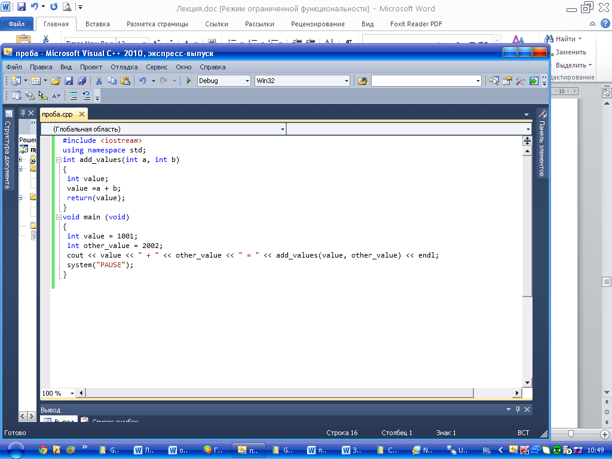
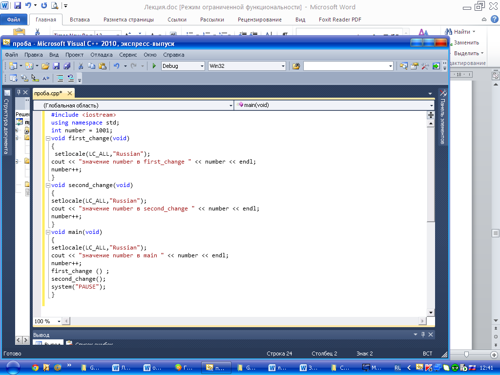
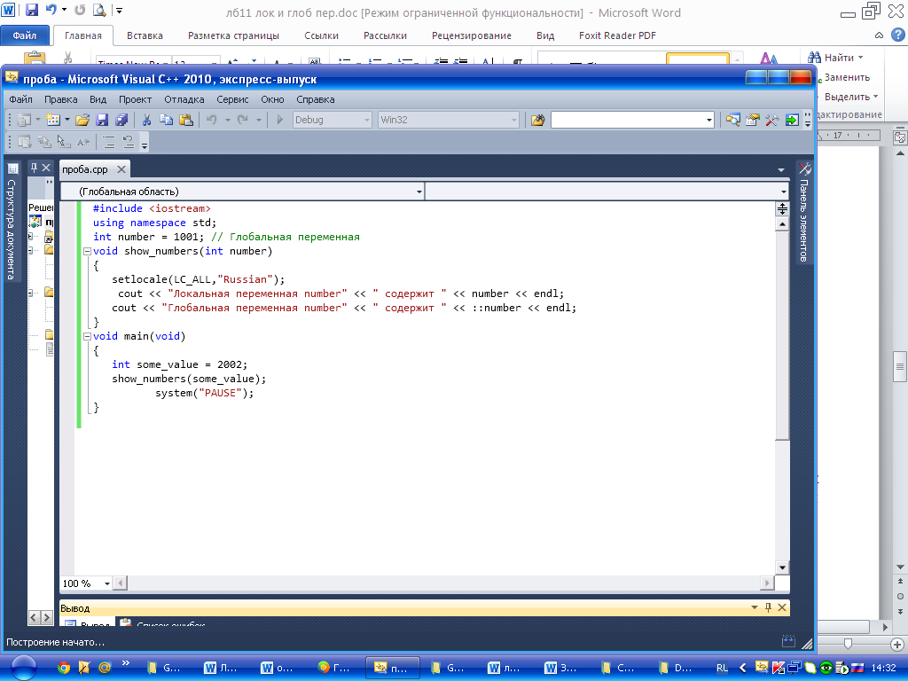
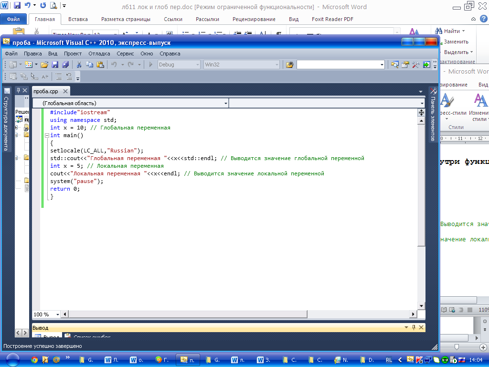

Лабораторная работа №9
Тема: Локальные и глобальные переменные в Microsoft Visual C++.
Цель работы: Разработка программ с применением локальных и глобальных переменных.
Материальное обеспечение: Компьютерное оборудование и программное обеспечение.
Основные понятия и определения
Для реализации своих задач функции должны использовать переменные. Переменные бывают двух типов: локальные и глобальные.
Локальные переменные представляют собой переменные, объявляемые внутри функции. Имя и значение локальной переменной известны только функции, внутри которой переменная объявлена. Необходимо объявлять локальные переменные в начале функции сразу же после первой открывающей фигурной скобки. Имена, назначаемые локальным переменным, должны быть уникальными только для функции, внутри которой эти переменные определены.
При объявлении локальных переменных внутри функции очень вероятно, что имя локальной переменной, объявляемой в одной функции, будет таким же, как и имя переменной, используемой в другой функции. Таким образом, если две функции используют одно и то же имя для своих локальных переменных, это не приводит к конфликту.
Методический пример 1. Данная программа использует функцию add_values для сложения двух целочисленных значений. Эта функция присваивает свой результат локальной переменной value. Однако в main один из параметров, передаваемых в функцию, также носит имя value. Поскольку C++ трактует обе переменные как локальные для соответствующих функций, их имена не конфликтуют:

Результат работы:
1001+2002=3003
Глобальные переменные.
Глобальные переменные – это переменные, которые известны на протяжении всей программы (глобально для всех функций). Чтобы объявить глобальную переменную, следует просто поместить объявление переменной в начало программы вне какой-либо функции. Все функции, которые следуют за таким объявлением, могут использовать эту глобальную переменную.
Методический пример 2. Данная программа использует глобальную переменную с именем number. Каждая функция в программе может использовать (или изменять) значение глобальной переменной. В данном случае каждая функция выводит текущее значение этой переменной, а затем увеличивает это значение на единицу:

Результат работы программы:
Значение number в main 1001
Значение number в first_change 1002
Значение number в second _change 1003
Как правило, следует избегать использования в программах глобальных переменных. Поскольку любая функция может изменить значение глобальной переменной, сложно отследить все функции, которые потенциально могли бы изменить данную переменную. Вместо этого программам следует объявлять переменную внутри main и затем передавать ее (как параметр) в функции, которым она нужна.
Конфликт глобальных и локальных переменных
По мере возможности следует избегать использования в программах глобальных переменных. Однако если программа должна использовать глобальную переменную, то может случиться, что имя глобальной переменной конфликтует с именем локальной переменной. При возникновении такого конфликта C++ предоставляет приоритет локальной переменной.
Однако могут быть ситуации, когда вам необходимо обратиться к глобальной переменной, чье имя конфликтует с именем локальной переменной. В таких случаях программы могут использовать глобальный оператор разрешения С++ (::), если необходимо использовать глобальную переменную. Например, предположим, что у вас есть глобальная и локальная переменные с именем number. Если функция хочет использовать локальную переменную number, она просто обращается к этой переменной, как показано ниже:
number = 1001; // обращение к локальной переменной
С другой стороны, если функция хочет обратиться к глобальной переменной, программа использует глобальный оператор разрешения, как показано ниже:
::number = 2002; // Обращение к глобальной переменной
Методический пример 3. Программа использует глобальную переменную number. В дополнение к этому функция show_numbers использует локальную переменную с именем number. Эта функция использует оператор глобального разрешения для обращения к глобальной переменной:

Результат работы программы:
Локальная переменная number содержит 2002
Глобальная переменная number содержит 1001
Методический пример 4. Написать программу, которая показывает обращение к переменной до главной функции программы и внутри функции, в результате локальная переменная должна быть равна 5, а глобальная 10

Результат работы программы:
Глобальная переменная 10
Локальная переменная 5
Программы могут выбрать глобальную или локальную переменную с помощью глобального оператора разрешения. Использование глобальных и локальных переменных может вызвать путаницу, которая в свою очередь может привести к ошибкам. Поэтому по мере возможности избегайте использования глобальных переменных.
Представление об области видимости переменных
Область видимости, определяет участок в программе, где имя переменной имеет смысл (и, следовательно, используется). Для локальной переменной область видимости ограничена функцией, внутри которой эта переменная объявлена. С другой стороны, глобальные переменные известны на протяжении всей программы. В результате глобальные переменные имеют большую область видимости.
Варианты заданий:
1.Написать программу, которая показывает обращение к переменной до главной функции программы и внутри функции, в результате локальная переменная должна быть равна 20, а глобальная 10.
2.Написать программу, которая показывает обращение к переменной до главной функции программы и внутри функции, в результате локальная переменная должна быть равна 30, а глобальная 20.
3.Написать программу, которая показывает обращение к переменной до главной функции программы и внутри функции, в результате локальная переменная должна быть равна 40, а глобальная 20.
4.Написать программу, которая показывает обращение к переменной до главной функции программы и внутри функции, в результате локальная переменная должна быть равна 50, а глобальная 10.
5.Написать программу, которая показывает обращение к переменной до главной функции программы и внутри функции, в результате локальная переменная должна быть равна 60, а глобальная 15.
6.Написать программу, которая показывает обращение к переменной до главной функции программы и внутри функции, в результате локальная переменная должна быть равна 15, а глобальная 12.
7.Написать программу, которая показывает обращение к переменной до главной функции программы и внутри функции, в результате локальная переменная должна быть равна 30, а глобальная 40.
8.Написать программу, которая показывает обращение к переменной до главной функции программы и внутри функции, в результате локальная переменная должна быть равна 50, а глобальная 20.
СРС
Определить, есть ли среди цифр заданного целого трёхзначного числа одинаковые.
Порядок выполения работы:
1.Изучить теоретические сведения по данной лабораторной работе.
2.Составить программу для заданного варианта.
3.Записать программу на языке Visual C++.
4.Отладить программу.
5.Продемонстрировать работу программы на ПК для заданного варианта.
Содержание отчета:
1.Тема и цель работы.
2.Вариант задания.
3.Листинг и результат программы.
4.Контрольные вопросы.
Контрольные вопросы:
1.Какие переменные называются локальными?
2.Какие переменные называются глобальными?
3.Конфликтуют ли локальные и глобальные переменные?
4.Какой оператор необходимо использовать при конфликте глобальных и локальных переменных?
5.Что такое область видимости? Какая область видимости у локальной и у глобальной переменных?
Литература:
1.Хортон А. Visual 2010: полный курс.:Пер. с анг.-М.:ООО «И.Д.Вильямс», 2011г , 1216 с.: ил.
2.Пахомов Б.И. С/C++ и MS Visual C++ 2010 для начинающих. – СПб.:БХВ-Петербург, 2011.-736 с.:ил.
3.Зиборов В. В. MS Visual C++ 2010 в среде.NET. Библиотека программиста. — СПб.: Питер,
2012. — 320 с.: ил.
4.Прохоренок Н.А. Программирование на С++ в Visual Studio 2010 Express, - СПб.: Питер, 2011г , 71 с.: ил.
5.Степаненко О.Е. VisualC++.NET.Классикапрограммирования.:-М:Научнаякнига,К.;Бу-кипист,2010.—768с.